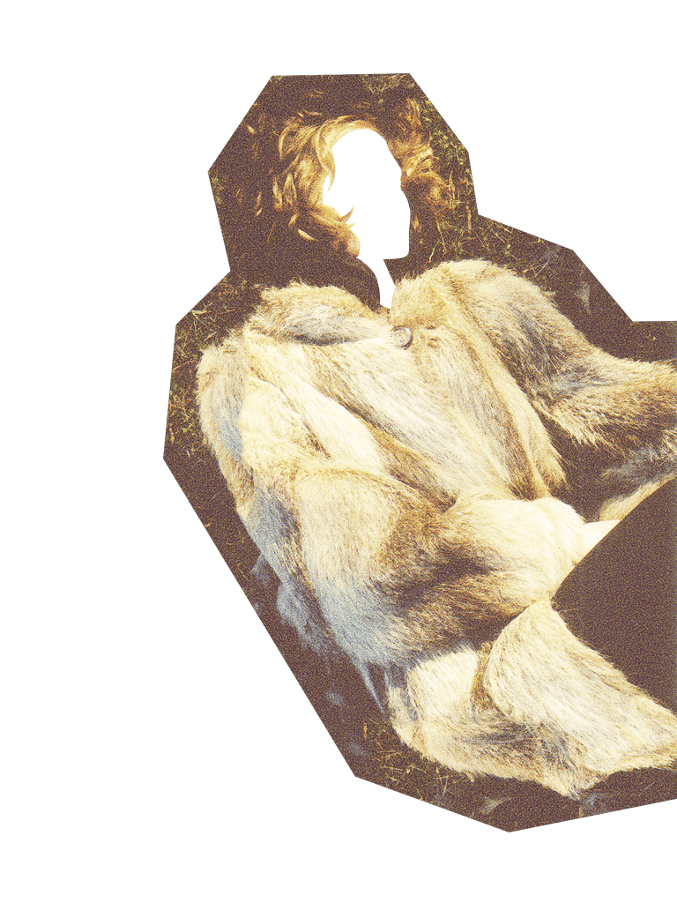
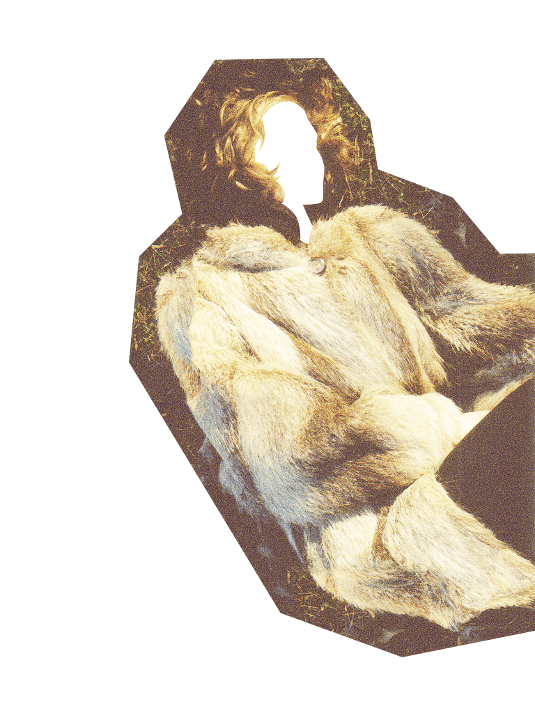

one winter's morning, a young Queen was sewing by her window. As she looked out on the snow, she pricked her finger and shed three drops of blood. Taken by the sight, she wished for a child with lips red as blood, skin white as snow, and hair black as the ebony window frame.
Soon the Queen had her wish, and little Snow White was born. But during her birth the Queen died, and soon a new Queen stood in her place.

The new Queen was vain and cruel, as cold as the last was warm. She possessed a magic mirror that could only speak the truth, and she regularly consulted the mirror to ensure that she was the most beautiful creature in the kingdom.
Little Snow White grew into a beautiful girl, and a jealous rage filled the Queen’s heart. Looking upon Snow White’s fair face awoke something deep within the Queen, and she could have no peace.
One day as she stood before her mirror, the Queen heard the answer she had been dreading: the young princess was more fair than she.
Her blood boiling, full of fear, she summoned her faithful servant and ordered him to take the girl into the woods and bring back nothing but her heart and liver.
The servant obeyed and took Little Snow White to the forest to pick flowers. When they were far from home, he prepared to do the Queen’s bidding. As he raised his knife above her head he looked at her face with her innocent eyes, lips red as blood, skin white as snow, and hair black and ebony. He found that he could not kill the beautiful creature, and lowered the blade.
The servant told little Snow White to run and never look back. He returned to the castle with the heart of a boar. The Queen kept it in a box beside her bed, and felt comfort. She felt no need to consult the mirror for she knew the answer.

Snow White fled into the woods, branches tearing at her dress and tears running down her face. Among the trees, she found a little cottage. Inside, she found seven empty pegs by the door and a neat kitchen with seven little chairs at a table set with seven places. She found seven warm beds, and she collapsed across them.
When little Snow White awoke, seven small faces were staring at her. The men were tiny, bearded and haggard. They were as surprised by her as she was by them. She had found the home of dwarves who toiled in the mountains, mining gold and gems to sell to the kingdom. They listened to her story and agreed that she could stay, provided she cooked and cleaned. Wise in the ways of the world, they warned her to watch out for the Queen, who would surely come to finish what she had started.
Indeed, the next time the Queen stood before her mirror, her blood ran cold. She remained in the shadow of Little Snow White, the fairest in all the land. The mirror told the Queen of the house in the woods and she hatched a new plan to end the girl’s life, setting out in rags with a corset designed to take Snow White’s breath away.
Snow White did not recognize the Queen out of her fine robes. Craving nice things, she invited the woman in and asked her to help lace up the dress. The Queen pulled the laces so tight that Snow White could not breathe, and as the girl fell to the floor she ran away laughing. The dwarves returned home soon after, quickly unlaced Snow White, and begged her to be more careful.
The Queen tried again, this time tempting the girl by offering a comb to untangle her unkempt locks. She drove the poisoned comb into Snow White’s scalp, and left feeling triumphant. But the dwarves saved her again by pulling out the comb before the poison finished its work, and again insisted that she not give in to temptation.
The Queen was not stopped. The third time she returned with an apple, pure and white on one side and luscious and red on the other. When Snow White took a bite from the red side, the poisoned chunk was lodged in her throat. When the dwarves returned home to find Snow White on the floor, they could find no magical device to remove. She lay perfectly still, silent and unmoving. They finally accepted her death, and mourned.

Despite her stillness, Snow White looked very much alive. No matter how much time passed, her red lips and fair skin held the beauty of youth, and the dwarves found they could not bury her. They built a glass coffin with golden trim and laid her in a small clearing, visiting Snow White in her peaceful slumber when they could.
One day, a Prince happened upon the coffin and fell in love with Snow White’s still, beautiful form. When he learned that she was a Princess, his heart leapt. He convinced the dwarves to allow him to take the coffin back to his castle by promising give her the love she deserved. He carried Snow White home, and once she was displayed on the altar he opened the coffin and kissed her deeply. The apple dislodged from her throat, and she awoke.
Overjoyed and deeply in love, Snow White agreed to stay in the castle and become Queen. When the old Queen received an invitation to the wedding, she consulted her mirror to learn more about the young bride. To her dismay she learned that she was one again bettered, and knew she must attend the wedding to see her rival.
When the old Queen arrived, she was aghast to see that the bride was none other than little Snow White. The Prince grabbed the old Queen and pulled a pair of coal shoes form the fire, forcing her to put on the shoes and dance. Soon Snow White took the throne, and the old Queen died not long after.

 
